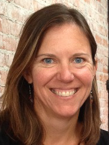

- Roxanne grew up in the Bay Area town of El Cerrito. She developed a deep love of 'community’ while studying city planning at Sonoma State University. Her first taste of working in agriculture was with a non-profit farm in Petaluma, California, which provided free or low-cost produce to low-income families, as well as nutrition education. In 2014, she moved to Templeton with her soon to be husband. Roxanne and her fiancé currently run a 2-acre organic farm as their “second job,” which is where her relationship with GleanSLO blossomed. She loves being outside and spending time with her family. She spends most of her free time traveling up and down the coast with her fiancé and their two 85 pound labs!
Emily Wilson, GleanSLO Program Coordinator -
Commonly known as Wilson or simply Willy, Emily Wilson grew up in the suburbs of Cincinnati, Ohio. After spending four years in Tallahassee, Florida earning her bachelors degree, she relocated to central coast California where she discovered her passion for communal living, mountainous landscapes, and rescuing fresh local produce. She spends her time outside of GleanSLO cycling around town, playing games, cooking, or making 'art'.
Chuck Asmus, GleanSLO Driver -
Chuck was raised in Southern California where he graduated high school. In Northern California, he earned a bachelor degree and teaching credential. For 33 1/2 years he worked as a clerk. Upon retirement he and his wife moved to the Central Coast. Chuck was recruited by legend recruiter and volunteer Marv to GleanSLO. After a year of volunteering with the non-profit, he was hired as part-time driver and facilitator by Jen Miller and has since been involved with GleanSLO through 6 directors and 1024 harvests.
Steering Committee Team
Ross Chenot - Ross fills his retired life enjoying our wonderful outdoors. Along with regular gleaning, he cycles, backpacks and rows. He also volunteers as a tutor in Santa Maria. Retiring after 35 years in the religious non-profit world, Ross loves to help people struggling on the margins. He regularly recruits friends and neighbors to join him in rescuing food from local farms and backyards.
Sally Brooks-Schulke - I worked for twenty years as a registered dietitian, and daily saw the role of good nutrition in promoting health and fostering disease. I then become a school teacher for 17 years; where my favorite position was teaching hands on science lab to fourth, fifth and sixth graders. Students were always amazed to understand that the human body is composed entirely from the food they ate and water. I moved to California from Cambridge, Massachusetts just weeks after I got married in 1980. I grew up in Connecticut and my family were avid gardeners. I was thrilled to garden every day of the year here and have always had fruit trees and a vegetable garden. Glean SLO's mission to provide high quality fruits and vegetables to the 46,000 food insecure people in our county fits right in with my goals for raising a healthy society.
Susan McTaggart. Los Osos Community Member - Susan first discovered the San Luis Obispo area when she came to Cal Poly in 1974. After graduating with a BS in Natural Resources Management she moved to Washington state for ten years, returning to the central coast to raise her family. She taught elementary school in Atascadero until retiring in 2014. Being a long-time gardener and advocate for healthy eating, volunteering with GleanSLO was a perfect fit for her retirement time. She loves being able to help others by spending time outdoors harvesting fresh produce. She was immediately impressed by the sense of community and caring that GleanSLO and its volunteers represent, and is proud to be a part of this group.

Jennifer Codron, Director, SLO Grown Kids - Growing up in Michigan, Jennifer feasted on produce from the garden during summertime. She attended Loyola University in Chicago where she earned a degree in Philosophy with a minor in Environmental Science. She has worked as a field biologist and an arborist. She currently volunteers as the Monarch Grove Elementary School Garden Coordinator. She is passionate about introducing kids to the pleasures and benefits of eating fresh fruit and vegetables.
Carolyn Eicher, GleanSLO co-founder - Carolyn Eicher loves to connect people through food--gleaning and harvesting, cooking and gardening. She was former GleanSLO Program Manager and also co-founded SLO Grown Kids, a local non-profit, to help promote school gardens. She loves photography and over the years has provided many photos for GleanSLO's newsletters, blog, Facebook and Flickr. She is proud to have helped create this gleaning program and loves that friendships have formed in fields, orchards, backyards and farms.
Kylee Singh, Los Osos Community Member- Kylee is from Brawley, California, a small farming community in the furthest southeast corner of the state. Her connection to the land was established early in her childhood when her favorite pastime was doing field checks with her dad and "sampling" produce before harvest. Since high school, Kylee has lived all over California but has most recently moved back to the central coast after three years spent in Alaska. Kylee has a degree in Environmental Science from Humboldt State University (HSU) and her Masters in Public Policy (MPP '13) from Cal Poly. In 2016, Kylee and her husband Nick were lucky enough to move back to SLO County so she could take the role as Cal Poly's first Sustainability Coordinator. Throughout school and before her job at Cal Poly she worked with a variety of environmental non-profits including ECOSLO here locally. While she feels blessed to have established a career in sustainability, specifically as it relates to the university's resource management, her passion has always been in sustainable food systems. Her role on the Glean SLO steering committee is one fun way to continue working toward a more socially and environmentally just food web. When she is not working or gleaning, you can find her and her husband working on their house, on an adventure in the great outdoors, or growing, cooking, and preserving local bounty. She loves sharing her foodie skills and the fruits of her labor with her friends, family, and community.
Ann Ketelaar, Community member- Ann Ketelaar grew up in Southern California. She moved to the Central Coast just over 20 years ago and loves it. She and her husband Dave raised their two teenage sons in Pismo Beach. After she transitioned away from full time work as a CPA to focus on her family, she began gleaning in 2015 and has completed over 100 gleans serving as both a gleaner and a glean leader. GleanSLO and the San Luis Obispo Food Bank allowed her to set an example for her family, showing them the importance of helping a worthy cause. Plants and gardening have always been an interest and hobby. Gleaning is a great opportunity to see firsthand what others have done with their gardens while helping people directly in our community. It has been an incredibly rewarding opportunity to meet people from all backgrounds and ages. In her spare time Ann also enjoys hiking with the family dog, rowing, doing Pilates and spending time with friends.
Nicholas Hustedt, Community member- Nick is a lifelong Californian who grew up in the redwood forest in rural BoulderCreek near Santa Cruz. Nick and his wife Suzanne have two adult children, three grandchildren and live in Atascadero. Nick is a retired wildland firefighter with 38 years of experience with CalFire, US Forest Service and the Bureau of Land Management. In retirement Nick enjoys golf, traveling, outdoor activities and working in his wood shop. He and his wife Suzanne have been gleaning at the Templeton Farmers Market for the last 4 years. In addition to his work with GleanSLO Nick is a driver for Atascadero Loaves and Fishes. Nick is proud of his participation in providing nutritious resources for those in need.
Suzanne Hustedt, Community member- When Suzanne discovered San Luis Obispo County after high school, she knew it was where she wanted to be, and has lived in the county since 1972. It was here that she raised her son and daughter, both of whom attended school in Atascadero. Suzanne has a grandson and granddaughter living in Atascadero, and a granddaughter in Glendale. In her career as an RN she has worked primarily as a Labor and Delivery and Newborn Care nurse, from the early 70’s until retirement in 2014. One of Suzanne’s joys is meeting parents with grown kids that remember her as their nurse from 20, 30 or 40 years ago.
In Retirement Suzanne enjoys gardening and has worked with One Cool Earth in the San Gabriel school garden. Suzanne and her husband Nick have been involved with Glean SLO for the past four years, primarily with gleaning the Templeton Farmers Market. Other interests include making herbal concoctions, traveling, being with grandkids, pilates, reading and being in nature.
Past Steering Committee Members, Founders and Contributors
Chris Aho
Bev Aho
Kathy apRoberts
Roger Burton
Megan Chicoine, Former Community Outreach Manager, Food Bank
Rob Coghill
Jim Cole
Norma Cole, Transition Towns, Institute for Sustainable Living
Lynn Cullen
Greg Ellis, One Cool Earth
Caroline Ginsberg
Carl R. Hansen, Food Bank Coalition CEO
Lynn James
Gail McNichols
Jim Patterson
Dr. Liz Schlemer
Pam Stein
Stephanie Teaford, Community Liaison, STRIDE, Cal Poly, Board Member, Food Bank Coalition
Dr. Linda Vanasupa
Nell Wade